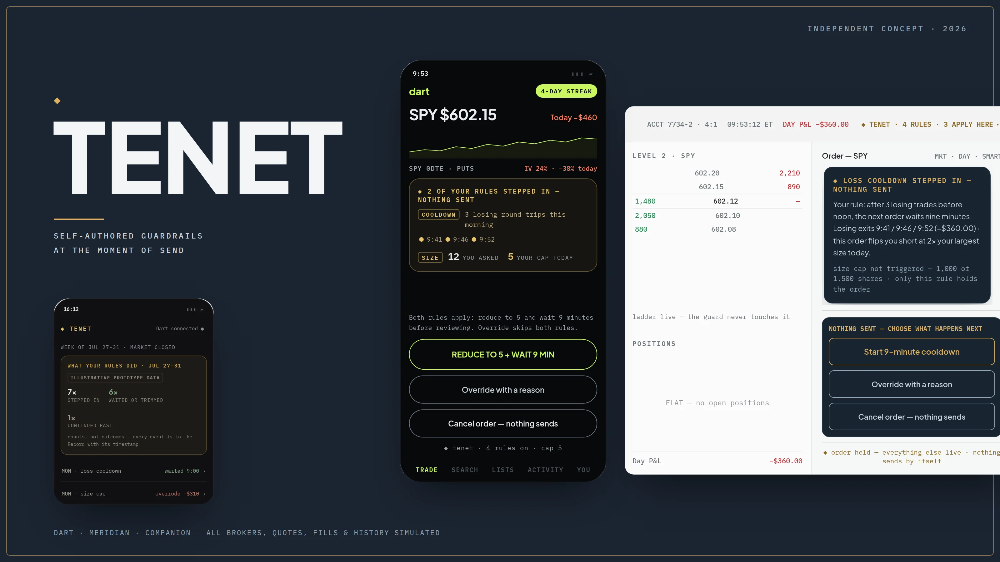

Tenet — one deliberate moment
Tenet lets active traders write rules after the market closes. When an order breaks one of those rules, it pauses before sending and explains why. The trader can reduce it, wait, override, or cancel.
The problemTrading apps make repeat orders fast. After a loss, that speed can turn the next trade into a reflex.
The rulePause, never block. Tenet cannot place an order or lock someone out. Reduce, wait, override, and cancel are always available.
StatusFunctional prototype · not shipped The rules, intervention state machines, cross-surface sync, and Record are fully functional. Brokers, quotes, fills, and history are simulated; no user study has been completed.
Prototype status: the rules, intervention flows, cross-surface sync, and Record work. Dart and Meridian are fictional brokers; all quotes, fills, and history are simulated. Broker integration is still conceptual, and no user study has been run.

TRY THE PROTOTYPEREAL BUILD · SIMULATED MARKET

SANDBOXED EMBED · SEND AN ORDER AND YOUR RULE STEPS IN: NOTHING SENDS, EVERY PATH REVERSIBLE · SIMULATED DATA
Fully interactive version ships with the deployed site (v2/tenet-proto/).
Small screen: the workstation demo needs room. Use OPEN FULL PROTOTYPE ↗ above.
THE SHAPE OF THE PROJECTWORKING PROTOTYPE
3
WORKING SURFACES · TWO HOSTS + ONE COMPANION
4
STAGED SCENARIOS IN THE HOST DEMO, ALL INTERACTIVE
0
USER STUDIES COMPLETED · FIRST STUDY PLANNED BELOW
THE NEXT ORDER
CAN BECOME A REFLEX
Retail apps create momentum with one-tap re-entry. Desktop workstations do it with hotkeys and dense order tickets. Tenet tests a simple idea: before a matching order goes out, show the trader the rule they wrote when the market was closed.
02 · SCOPE &
ETHICAL BOUNDARY
What Tenet never does: send an order automatically, or lock a trader out.
- What is simulated: Dart and Meridian are fictional; quotes, fills, and history are simulated and labeled. Broker integration and the import/analysis pipeline remain future work
- What Tenet is not: a broker, a trading journal, a signal generator, financial advice, or a promise of profitability. One narrow job: restore a single reflective moment at send
ONE RULE SET,
THREE SURFACES
Rules are written in the Companion app, checked inside the broker when an order is sent, then logged back to one Record. The trader writes the rule; the host applies it; the Record shows what happened.
Stricter → immediate.
Tightening syncs to both hosts right away; you can raise your bar mid-day.
Looser → next open.
Loosening arms at the next open, so a rule can't be talked down in the moment it exists to interrupt.
Failure → fail open.
If the connection drops, trading proceeds; the gap is recorded in plain view.
THE SAME RULE
SHOULD NOT LOOK THE SAME
Dart and Meridian are not responsive versions of one interface. Dart is a bright mobile app; Meridian is a dense desktop workstation. The intervention uses the same rule and state machine in both, but matches the pace and visual language of each host.
A COOLDOWN NEVER
SENDS BY ITSELF
The first version queued the order to send when the timer ended. That gave the tool too much control. Now the order is held, the quote refreshes, and the trader has to review it again before anything can go out. Every fill shown here is simulated.
MERIDIAN NEEDED
A QUIETER VERSION
On Meridian, Tenet stays out of the way until transmit. A small header chip shows how many rules apply; the full panel appears only when one steps in. The chart, ladder, positions, and order context do not move.
THREE WORDING AND
BEHAVIOR CALLS
A · “Stepped in,” not “blocked.”
“Blocked” made the tool sound like the decision-maker. The trader wrote the rule and can still override it, so the final copy says, “Your rule stepped in.”
B · Nothing sends by itself.
When a cooldown ends, the order returns for review. Reduce, wait, override, and cancel sit at the same level; none is preselected.
C · Counts before dollars.
Tenet cannot prove it “saved” money. The Record leads with what the rule did. Dollar figures stay secondary and are labeled EST until settled, with fees and slippage excluded.
06 · THE COMPANION —
RULES / PATTERNS / RECORD
The Companion starts with behavior: 7× stepped in · 6× waited or trimmed · 1× continued past. Estimated loss avoided and realized loss on overrides appear below, clearly separated and labeled. Neither number is framed as money Tenet earned.
Open the live Companion → · Host + Companion, synchronized side by side →
07 · TRUST, FAILURE &
ACCESSIBILITY
A tool that interrupts trades has to explain its access, its failures, and its limits.
- Trust & data. Tenet reads order tickets at send and fills after close, conceptually via an embedded broker SDK, never your screen or other accounts. In the proposed model, disconnecting stops rules from arming and deleting the account removes rules and Record
- Failure behavior. Failed sync surfaces an explicit retry. Connection loss fails open: trading proceeds and the gap shows in the Record (“feed lost 17 min · trading unaffected · logged”). Events are immutable; notes and error annotations attach alongside
- Accessibility, as implemented in the prototypes: every intervention path is keyboard-complete; option groups use real radio semantics with arrow keys; status changes are announced live; charts carry text alternatives; reduced motion is respected. No WCAG certification is claimed
WHAT CHANGED AFTER
THE FIRST PASS
The early concept tried to do too much and was unclear about who controlled the order. I narrowed it in three places:
- Everything, therefore nothing → one job. The first concept was a broad trading-journal product: import, session analysis, annotation, plus interventions. It narrowed to the intervention layer; the journal ambitions were deferred
- “Blocked” → a legible state machine. Early framing left unclear whether the order was stopped or the system could act alone. It became hold → choose (reduce / wait / override / cancel) → explicit re-confirmation. Nothing automatic
- Outcome-led evidence → behavior-led Record. A headline dollar figure implying Tenet made money became a synchronized Record computed live from prototype interactions: explicit estimates, settled-vs-EST, SIMULATED FILL labels throughout
WHAT STILL NEEDS
TESTING
This is a working prototype, not a validated product. The biggest open questions are:
- No moderated study yet; nothing here is validated with users
- The broker SDK and import pipeline are conceptual; feasibility is argued, not proven
- Market outcomes cannot validate behavioral effectiveness; a “saved” trade may have been a missed winner
- Free-text override reasons and deeper evidence-to-fill linkage remain deferred
Planned first study: moderated think-aloud sessions on the working prototypes with 6–8 active options/futures traders, including prop-evaluation users. It would test comprehension of why a rule fired, estimate versus actual, stricter-immediate versus looser-at-open, tone at the intervention moment, and whether the design could inadvertently encourage more trading. A sample this size supports comprehension and tone findings, not efficacy claims.
Tenet puts a trader's own rule back in front of them before an order goes out. The pause is reversible, every exit stays open, and nothing sends on its own.
Friction, never a blockreduce · wait · override · cancel
Failure modefails open · visible in the Record
Evidence runnone yet · 6–8-trader study planned